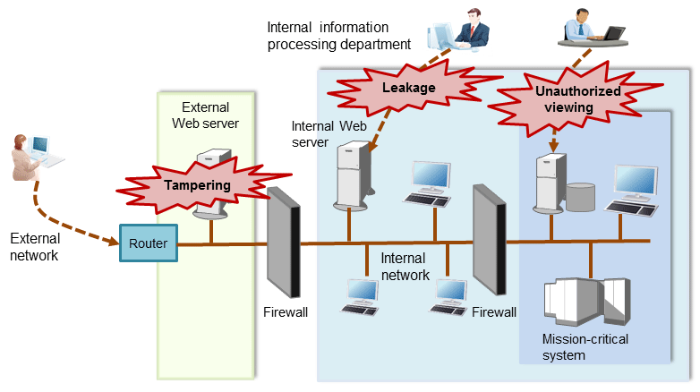

Computer security is the protection of information systems and data from risks such as leakage or tampering of information, attacks, intrusions, eavesdropping from external sources, and interference with information services. Security measures are essential for the advance prevention of security threats in order for information systems to gain trust as social infrastructure.
Figure 1.1 Security threats

The security measures in information systems can be classified as follows:
Network
Web
Application
Database
PC
This document focuses on database security measures when using FUJITSU Enterprise Postgres.